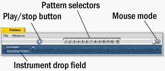
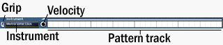

The Pattern Window
The Pattern window is, where you do most of your work. You create and edit the patterns and play them.

You start with dropping a instrument from the Drumset window to the field titled "Drop instrument here".
When you have done so, you get a new row:

The elements are:
- Grip - when you have more rows, you can use it to move them up and down. You can also use it to delete a complete row.
- Instrument - similar to the buttons in the Drumset window: To drag it, you must hold the mouse down a short time.
- Velocity knob - use it to regulate the velocity of this track
- Pattern track - that's the place where you edit the pattern for this instrument. It depends on the Mouse mode (you set it in the top
right of this window) how you edit the pattern
The buttons in the top of the window, the pattern selectors let you choose between 12 different patterns.
To copy them use drag & drop. To delete them drag them on the trash symbol or simply
clicking on the trash button. You are also able to drag them onto the trash on your desktop (Mac users might like that ;-) ).
|